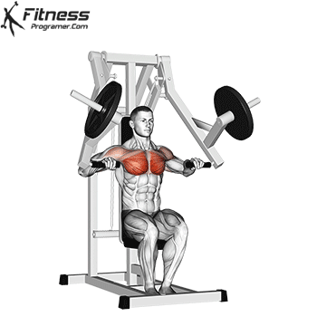
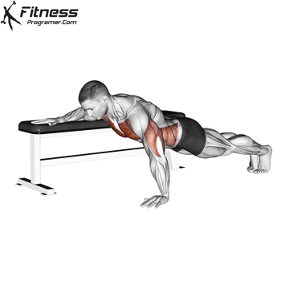
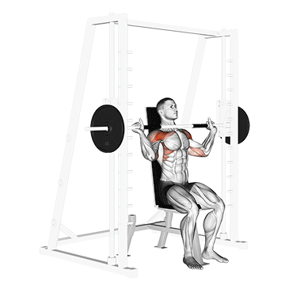
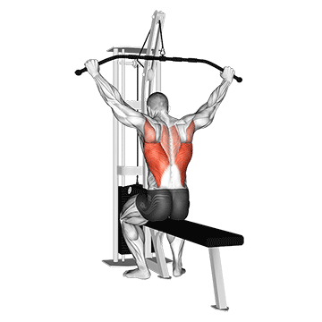
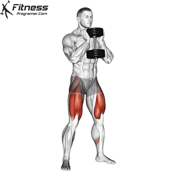
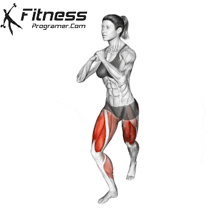
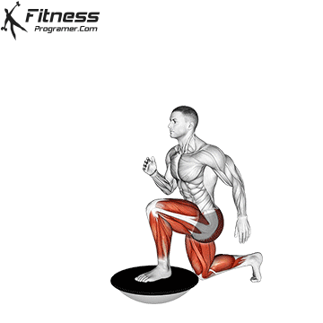

체스트 프레스
주요 근육: 대흉근, 삼두근
이 운동은 바벨을 밀어올리는 동작을 통해 가슴 근육과 상체의 힘을 강화하는 운동입니다.
반복 횟수: 3세트 15회
인클라인 푸시업
주요 근육: 상부 가슴
이 운동은 가슴 플라이 동작을 위한 머신에서 수행됩니다. 가슴 근육을 고립시키고 강화하는 데 효과적입니다.
반복 횟수: 3세트 10회
펙덱 플라이

주요 근육: 바깥 가슴
이 운동은 가슴 근육의 바깥쪽을 효과적으로 자극합니다.
반복 횟수: 4세트 15회
레버 프론트 풀 다운

주요 근육: 등/광배근
이 운동은 머신을 사용하여 레버를 아래로 당기는 동작으로 수행됩니다.
반복 횟수: 3세트 10회
풀 업

주요 근육: 등/광배근
이 운동은 자신의 체중을 이용하여 바를 잡고 몸을 위로 당기는 운동입니다.
케이블 리어 풀 다운

주요 근육: 등/광배근
이 운동은 등 근육과 광배근을 타겟으로 합니다.
스미스 머신 숄더 프레스
주요 근육: 어깨
스미스 머신을 사용해 어깨 근육을 강화하는 운동으로, 바벨을 잡고 머리 위로 들어 올립니다. 안정적인 궤도로 움직여 초보자에게 적합합니다.
반복 횟수: 3세트 8회
플라이 머신

주요 근육: 어깨
어깨 후면(리어 델트)을 강화하는 운동으로, 앉아서 손잡이를 뒤로 당기며 어깨 후면을 자극합니다. 자세를 유지하기 쉽고, 목표 근육을 집중적으로 단련할 수 있습니다.
반복 횟수: 3세트 12회
페이스 풀 다운
주요 근육: 어깨
케이블 머신을 이용해 얼굴 방향으로 로프를 당기는 운동으로, 어깨 후면과 상부 등 근육을 강화합니다. 안정성과 균형을 향상시켜 부상 예방에 도움됩니다.
반복 횟수: 3세트 10회
덤벨 리버스 컬

주요 근육: 이두근, 팔뚝
이 운동은 덤벨을 사용하여 손바닥이 아래를 향하도록 (오버핸드 그립) 하여 팔꿈치를 구부리는 동작을 포함합니다. 주로 이두근과 팔뚝 근육을 강화하는 데 효과적입니다.
반복 횟수: 3세트 10회
덤벨 시티드 뉴트럴 리스트 컬

주요 근육: 팔뚝
이 운동은 덤벨을 사용하여 시티드 포지션에서 손바닥이 서로 마주 보게 하여 (뉴트럴 그립) 손목을 구부리는 동작을 포함합니다. 주로 팔뚝 근육을 타겟으로 하여 손목과 전완근의 힘을 강화하는 데 효과적입니다.
반복 횟수: 3세트 10회
물병 해머 컬

주요 근육: 이두근, 팔뚝
반복 횟수: 3세트 10회
덤벨 워킹 런지
주요 근육: 엉덩이, 다리
이 운동은 덤벨을 사용하여 한 발씩 앞으로 내딛으며 런지 자세를 반복하는 동작을 포함합니다. 주로 전신, 엉덩이, 다리 근육을 타겟으로 하여 전신의 근력을 강화하는 데 효과적입니다.
반복 횟수: 3세트 10회(한 쪽 다리당)
덤벨 데드리프트
주요 근육: 척추 기립근, 엉덩이, 다리
이 운동은 덤벨을 사용하여 상체를 앞으로 숙였다가 일어서는 동작을 포함합니다. 주로 척추기립근, 엉덩이, 다리 근육을 타겟으로 하여 전신의 근력을 강화하는 데 효과적입니다.
반복 횟수: 3세트 10회
물병 고블릿 스쿼트
주요 근육: 엉덩이, 다리
이 운동은 덤벨을 가슴 앞에 들고 스쿼트 자세를 취하는 동작을 포함합니다. 주로 엉덩이와 다리 근육을 타겟으로 하여 하체 근력을 강화하는 데 효과적입니다.
반복 횟수: 3세트 12회
생성된 운동 루틴